Paises participantes
|
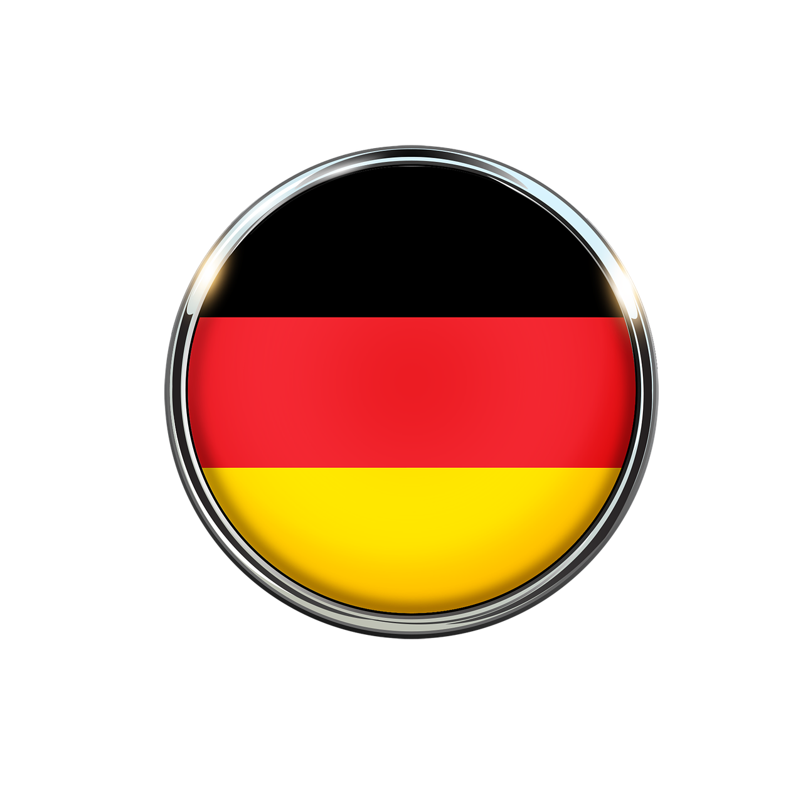
| Alemania siempre ha sido un país con tradición en F1. Tanto sus circuitos como sus pilotos,
pilotos que han vivido grandes éxitos y que tienen en Schumacher y en Vettel a sus principales estiletes.
Pero también están otros como Rosberg y Sutil en la actualidad, que están realizando una gran temporada con
el Mercedes y el Force India.
|
|
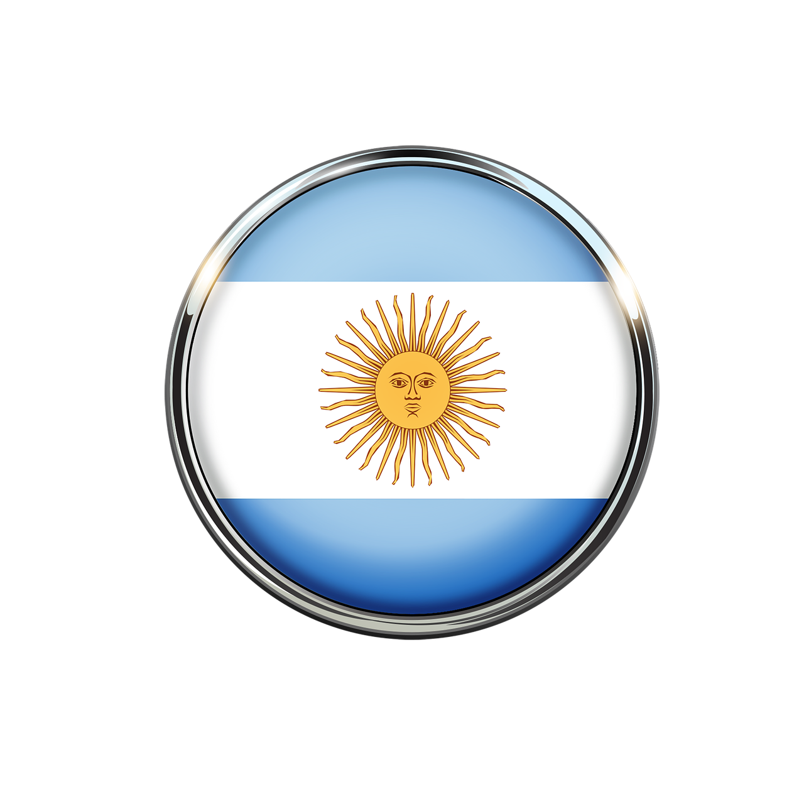
| A lo largo de la historia, varios argentinos fueron parte de la Fórmula 1 y dejaron su marca.
Los tres que lograron victorias son Juan Manuel Fangio, José Froilán González y Carlos Reutemann.
|
|
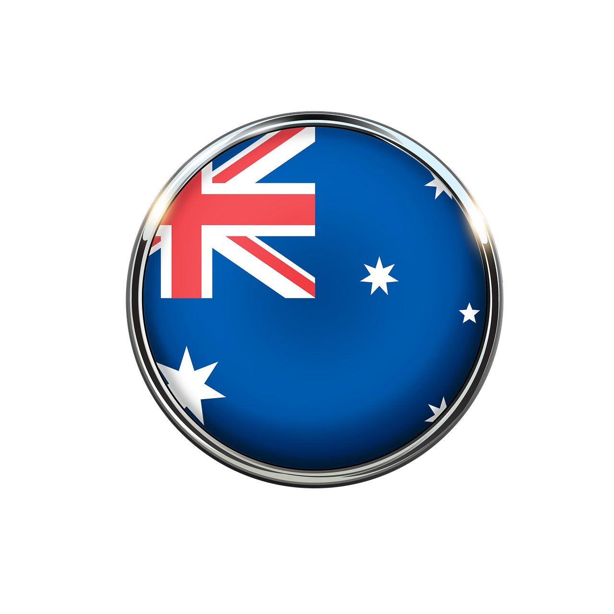
| El primer australiano que corrió en un monoplaza en la Fórmula 1 fue el piloto de Melbourne Tony Gaze ,
que en 1952 llegó a participar en tres grandes premios , i.
Pero Gaze había sido el primero y su senda fue continuada por otros pilotos
como Tim Schenken en 1970, que participó en 16 carreras,
o Alan Jones.
|
|
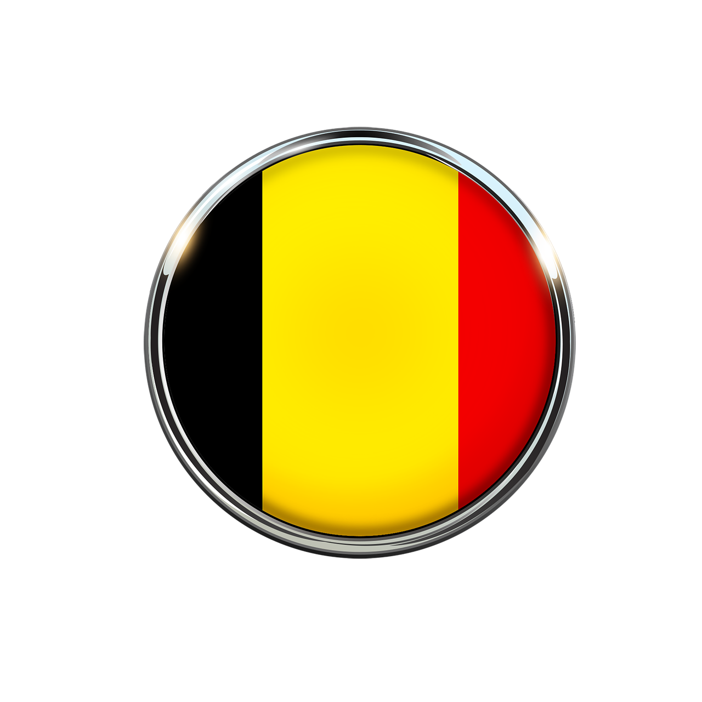
| Cuando Jéromê d’Ambrosio nació en Etterbeek en 1985, su compatriota Thierry Boutsen terminaba una
temporada en la que a punto estuvo de saborear su primera victoria en Fórmula 1. De hecho la saboreó,
pero se la quitaron de las manos inesperadamente cuando De Angelis fue reclasificado. Es sólo una de las
historias protagonizadas por uno de los veintitrés belgas que, hasta hoy, han participado en Fórmula 1.
|
|
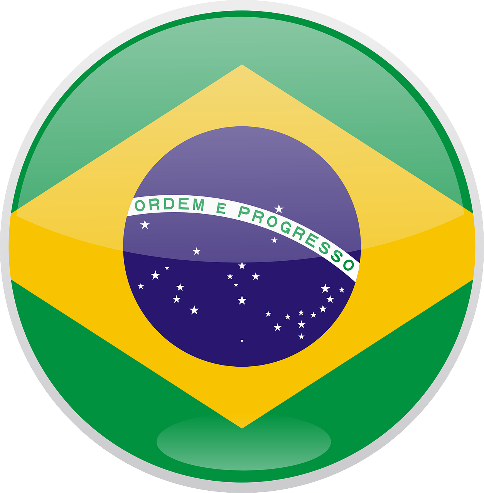
| Ayrton Senna es uno de los más grandes de la historia del automovilismo. Campeón Mundial en 1988, 1990 y 1991,
sumó fans en todo el mundo, y entró en la leyenda al sufrir un accidente fatal en San Marino ’94. Se
convirtió en símbolo de una época de la Fórmula 1.
|
|
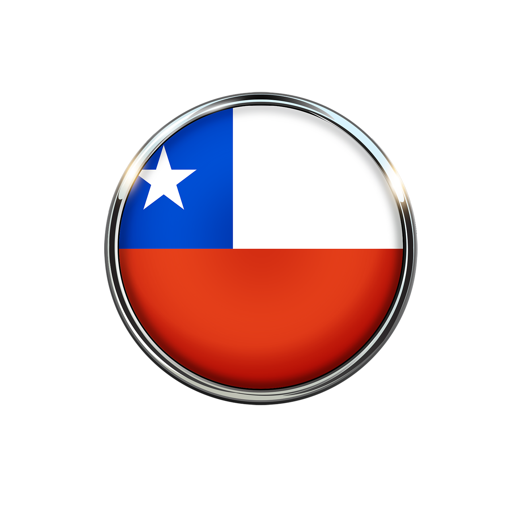
| Eliseo Salazar Valenzuela (Santiago, Chile, 14 de noviembre de 1954) es un piloto de carreras chileno
que ha participado en las principales competencias de automovilismo del mundo. Paso por el equipo March,
Ensing (1981), ATS (1982) y RAM (1983).
|
|
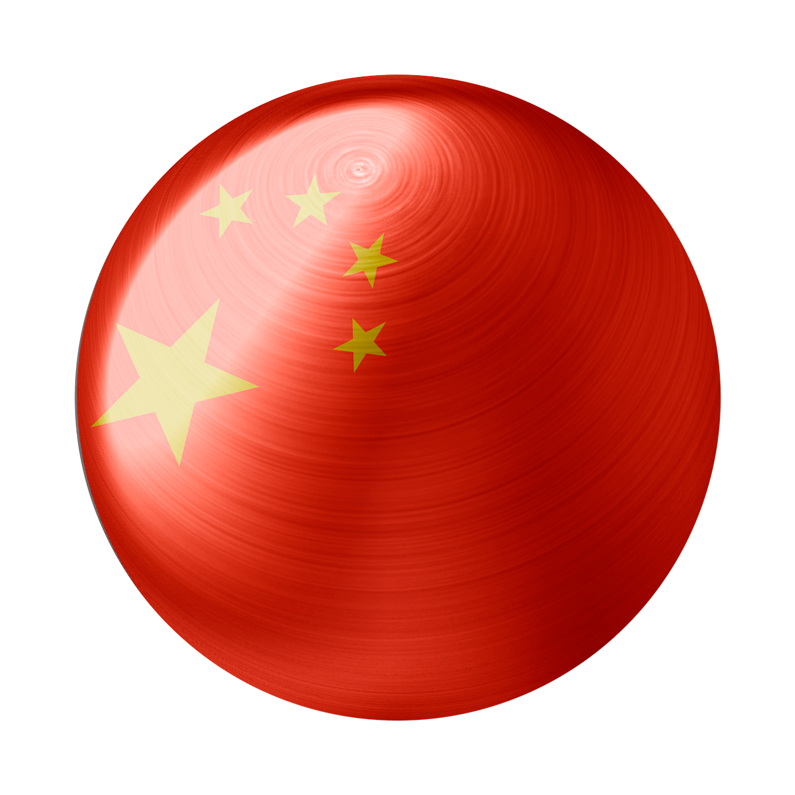
| Hasta la fecha, solo dos pilotos chinos habían estado en la órbita de la Fórmula 1:
Ma Qing Hua, que fue tercer piloto de HRT en el 2012 (en cuatro GP) y de Caterham en un GP del 2013,
y Adderly Fong, que también fue piloto reserva, en este caso de Sauber, en el GP de Abu Dhabi del 2014.
|
|
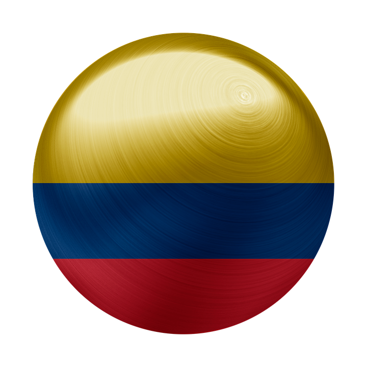
| Juan Pablo Montoya es el más exitoso de los pilotos colombianos, al pelear el título de Fórmula 1
en 2003 y ganar Mónaco e Indianápolis.
No solo por sus siete victorias en la Fórmula 1, incluyendo el Gran Premio de Mónaco, o el tercer lugar
en el Mundial de 2003. También por la conquista de las 500 Millas de Indianápolis en 2000 y 2015, así como
las 24 Horas de Daytona de 2007, 2008 y 2013.
|

| Tom Belso fue el primer danés en competir, disputando dos grandes premios en 1974 a los mandos de
un Iso Marlboro, .
Más recientemente, el padre de Kevin, Jan Magnussen, disputó 24 carreras entre 1995 y 1998.
El último antecedente danés en la Fórmula Uno es el piloto Nicolas Kiesa, que disputó cinco
grandes premios en la temporada 2003, a los mandos de un Minardi, en la que no llegó a puntuar.
|

| El primer piloto fue Paco Godia allá por el Gran Premio de
España de 1951.
Juan Jover también debutó en aquel Gran Premio de España de 1951, su primera y última carrera en la F1.
El tercero en subirse a la categoría fue Alfonso de Portago, quien compitió en 1956 y 1957 siempre
con la escudería Ferrari.
Antonio Creus tiene el mismo registro que Jover,
El quinto piloto español en debutar en F1 fue Alex Soler Roig,
En 1976 debutó Emilio de Villota participando en 14 grandes premios.
Adrián Campos fue el octavo piloto español en subirse a un F1,
Pedro Martínez de la Rosa y Marc Gené en 1999.
En 2001 hacía su debut Fernando Alonso,
Jaime Alguersuari debutó en 2009 y permaneció en la F1 hasta 2011,
La temporada 2015 significó el debut de Roberto Merhi
|
|
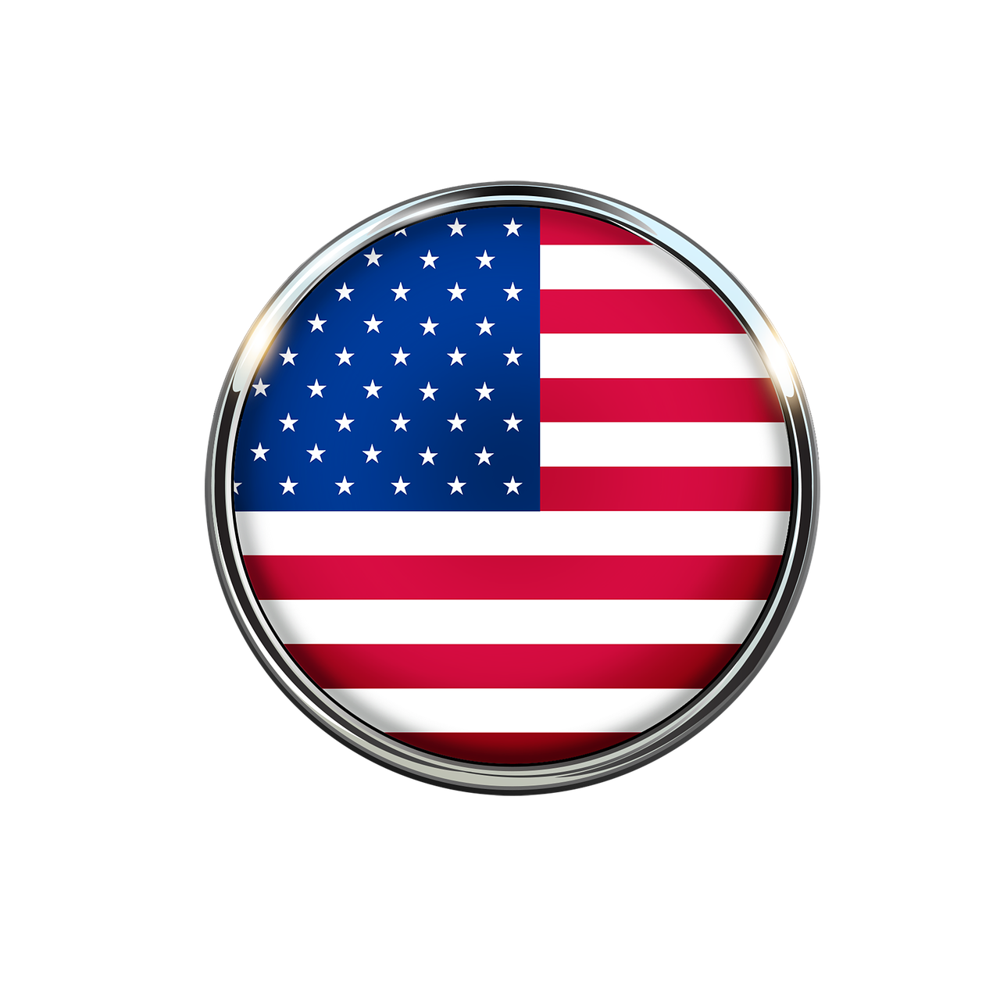
| En todas las listas de grandes pilotos a lo largo de la historia de la Fórmula 1
siempre aparece el nombre de Mario Andretti. El estadounidense se ha convertido en una leyenda
de la Fórmula 1, y se convirtió en el primer norteamericano en conquistar un Campeonato del Mundo, el de 1978.
|
|
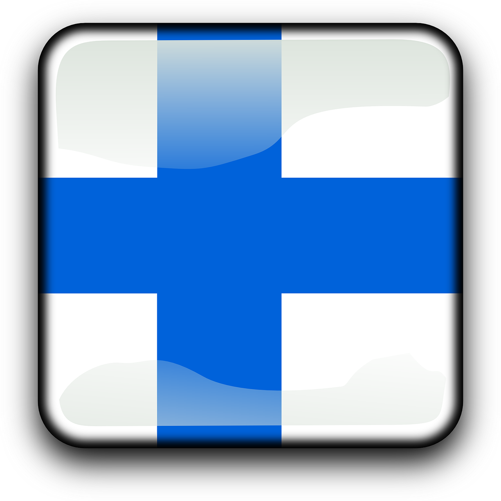
| En total, son cinco pilotos que representan o han representado a Finlandia: Mika Hakkinen, Kimi Raikkonen,
Keke Rosberg, Valtteri Bottas, Heikki Kovalainen, quienes se han caracterizado por su velocidad o talento.
|
|
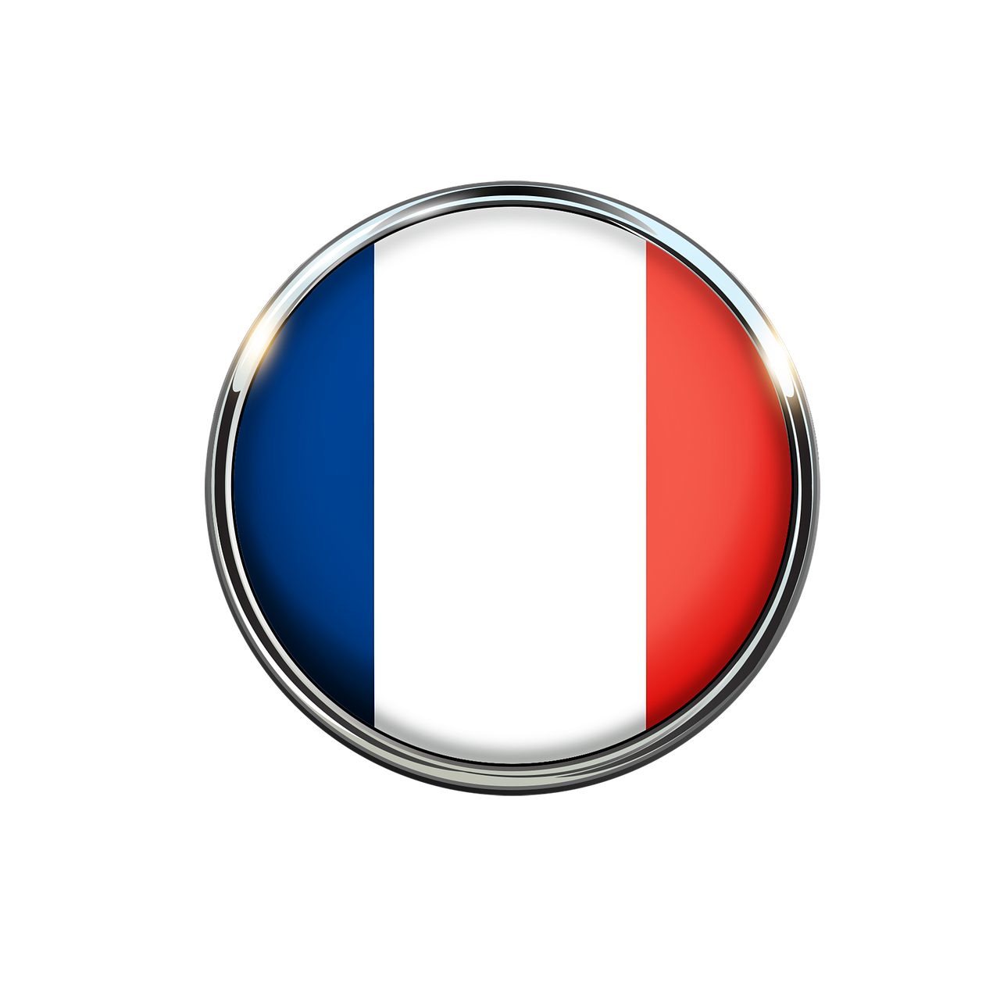
| Los pilotos franceses de la Fórmula 1 han sido 75, siendo el más exitoso Alain Prost,
que ganó el Campeonato Mundial de Pilotos en cuatro ocasiones.
|
|
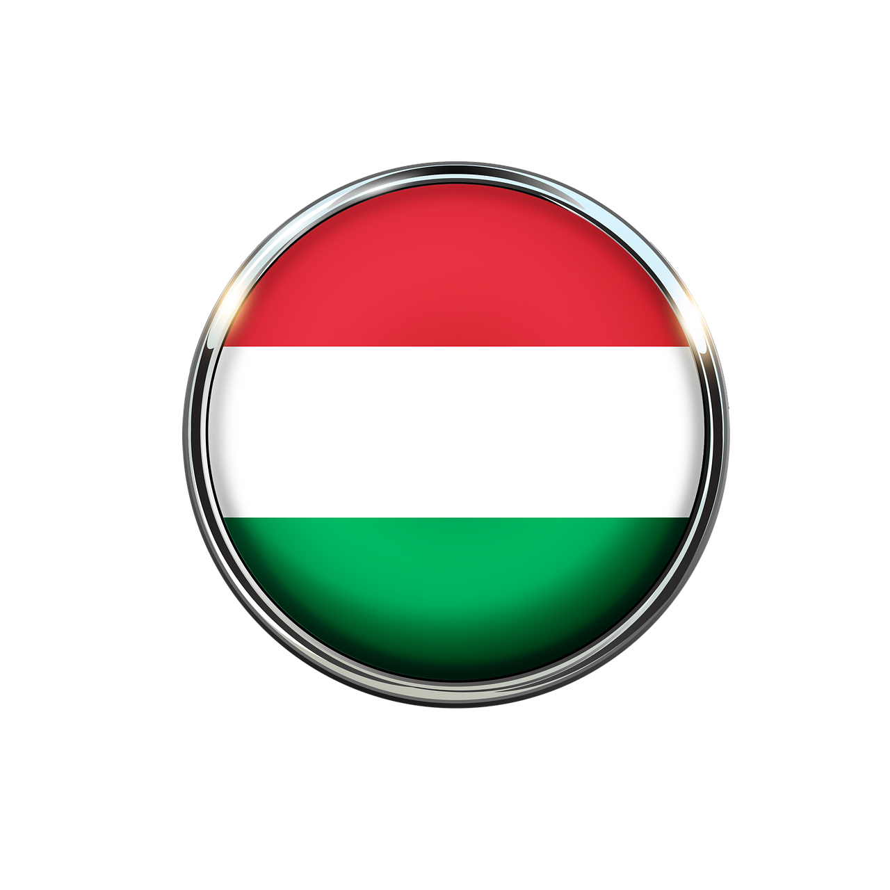
| Zsolt Baumgartner (Debrecen, Hungría; 1 de enero de 1981), es un expiloto de automovilismo
húngaro. Corrió en Fórmula 1 en los años 2003 y 2004 para las escuderías Jordan y Minardi,
siendo el único piloto húngaro en llegar a la F1.
|
|
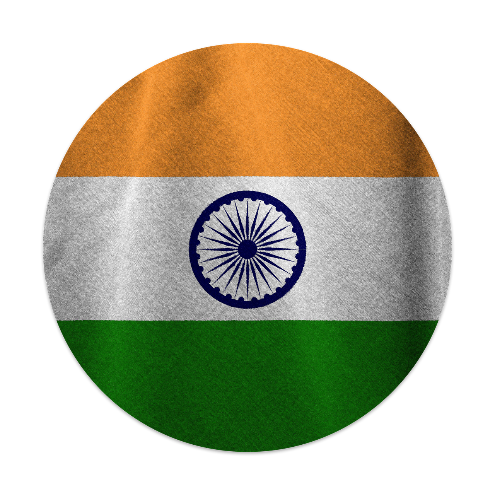
| Karun Chandhok (Madrás, Tamil Nadu, India; 19 de enero de 1984) es un expiloto indio de automovilismo.
Fue piloto del equipo de Fórmula 1 Hispania Racing en 2010, y también corrió una carrera para Lotus en 2011.
Además, ha sido campeón en competiciones regionales en Asia. También ha corrido en GP2 Series, WEC, Fórmula E,
entre otras. Desde 2012 ejerce como comentarista y analista de automovilismo.
|
|
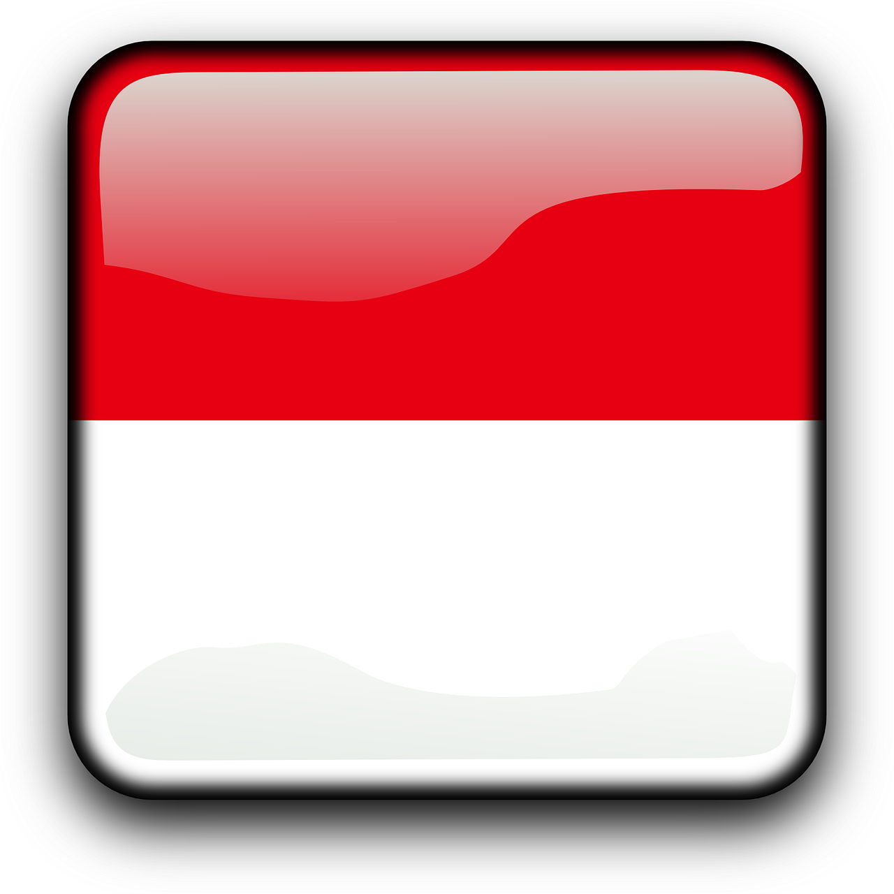
| Rio Haryanto (Surakarta, Indonesia; 22 de enero de 1993) es un piloto de automovilismo indonesio.
Actualmente corre en Asian Le Mans Series.1
Fue campeón de Fórmula BMW Pacífico en 2009. Luego corrió dos temporadas de GP3 Series,
donde ganó tres carreras. Pasó a GP2 en 2012 y resultó 4.º en la temporada 2015 con Campos Racing.
|
|
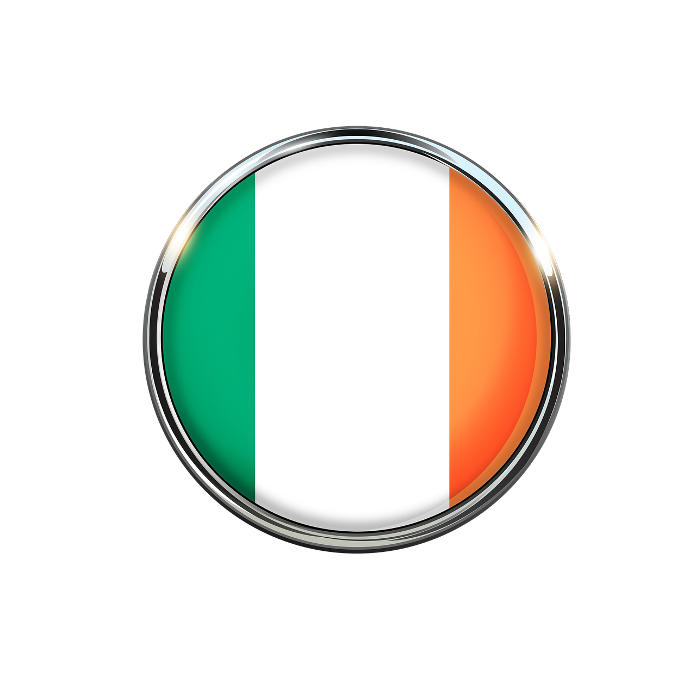
| Hugh Peter Martin Donnelly (Belfast, Irlanda del Norte, Irlanda, Reino Unido; 26 de marzo de 1964),
es un piloto de automovilismo británico. Después de competir en Fórmula 3 y Fórmula 3000, donde logró ganar
3 carreras y ser uno de los principales aspirantes al título, Donnelly compitió en Fórmula 1 en 1989 y 1990,
hasta que un grave accidente durante la clasificación en el circuito de Jerez terminó con su carrera en dicha categoría.
|
|
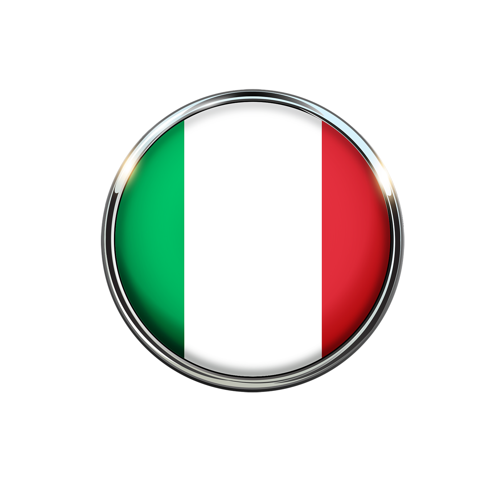
| El primer ganador de la Fórmula 1 fue, de hecho, un italiano: el turinés Nino Farina (1906-1966).
Venció precisamente con Alfa Romeo, el equipo en el que corre Giovinazzi… aunque no fuera exactamente la misma Alfa.
Farina ganó el primer mundial de pilotos, pero el mejor italiano de la Fórmula 1 en cuanto a resultados no fue él,
sino Alberto Ascari (1918-1955). Con dos títulos de campeón del mundo dejó su sello en los años 1952 y 1953.
Los dos primeros mundiales de F1 se los llevó un equipo italiano –Alfa Romeo– y no fue hasta 1952 cuando Ascari
hizo ganar a otra escudería de la misma nacionalidad, Ferrari.
|
|
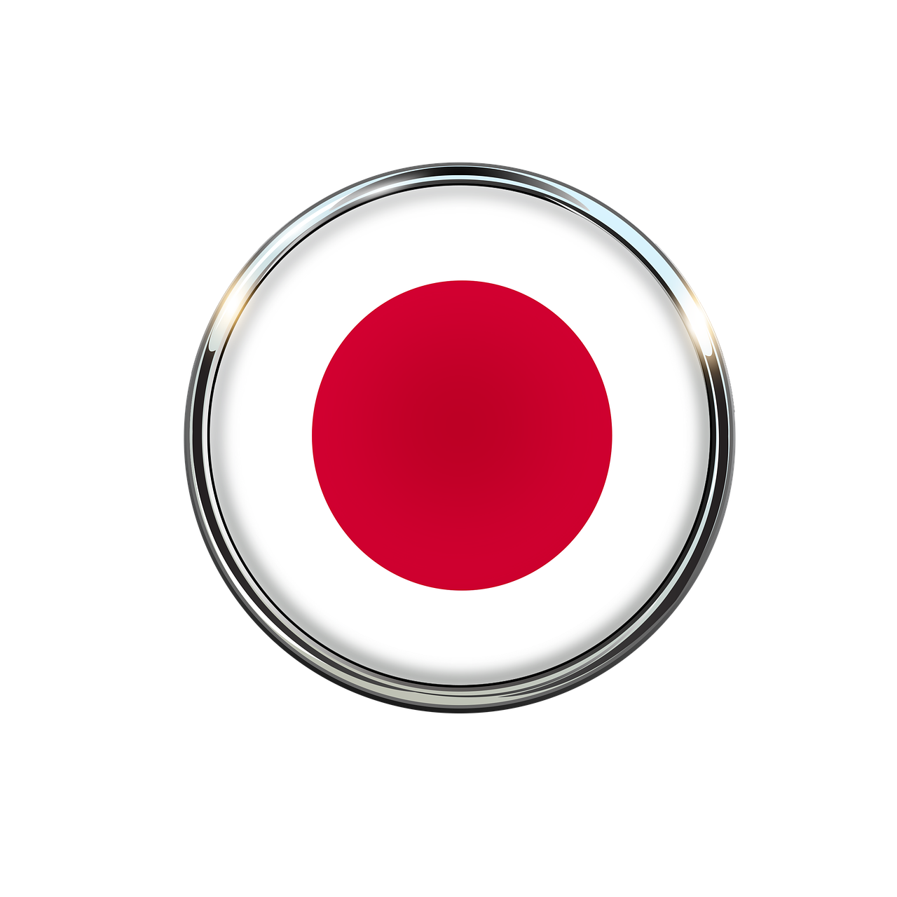
| La historia de Japón y la F1, comienza en el año 1976 con la llegada de Masahiro Hasemi,
Noritake Takahara y Kazuyoshi Hoshino, que se presentaron en solo una competencia en toda la temporada,
el GP de Japón de ese año. El desempeño de los tres no fue destacado, Hasemi finalizó en el puesto 11º,
Takahara logró finalizar 9º y Hoshino abandonó la competencia, aunque logró rodar hasta en la 3ª posición
en un momento de la competencia.
|
|
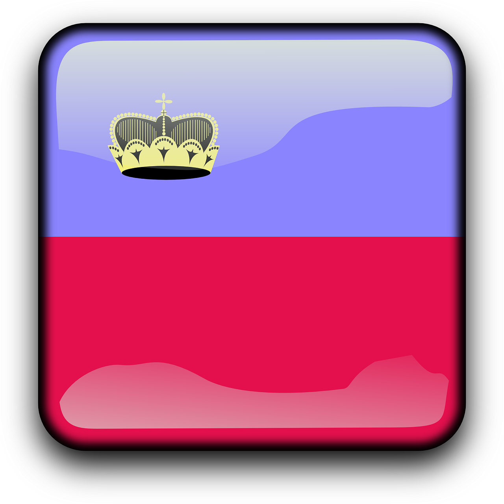
| Frederick "Rikky" von Opel (Nueva York, 14 de octubre de 1947) es un expiloto de automovilismo liechtensteiniano.
Disputó 14 Grandes Premios de Fórmula 1, siendo el único piloto de dicha nacionalidad en correr en este campeonato.
Es hijo de Fritz von Opel y nieto de Adam Opel, antiguos dueños de la empresa automotriz Opel Automobile GmbH.
|
|
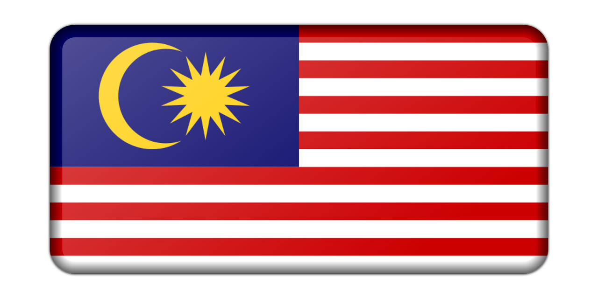
| Alexander Charles Yoong Loong (Kuala Lumpur, Malasia; 20 de julio de 1976) más conocido
como Alex Yoong, es un expiloto de automovilismo malayo, siendo el primer de dicha nacionalidad en correr en Fórmula 1.
Yoong hizo su debut en Fórmula 1 justamente en el Gran Premio de Italia de la temporada 2001,
reemplazando al brasileño Tarso Marques en la escudería de Minardi, siendo compañero de Fernando
Alonso. También disputó la temporada 2002 con el equipo italiano. Su mejor resultado fue un 7º en
Melbourne, pero no le sirvió para ganarse la continuidad en el equipo y abandonó la categoría.
|

| Solamente seis pilotos mexicanos son los que han tenido la posibilidad de estar en la Fórmula Uno.
Algunos de ellos lograron subir al podio, como Pedro Rodríguez y Checo Pérez. Sin embargo, el resto dejó
su huella en la máxima categoría del automovilismo con el paso del tiempo.
El triunfo de Sergio Pérez en el Gran Premio de Sakhir este domingo 6 de diciembre de 2020 nos
hace recordar a los aztecas que han pasado por las pistas de la F1.
|
|
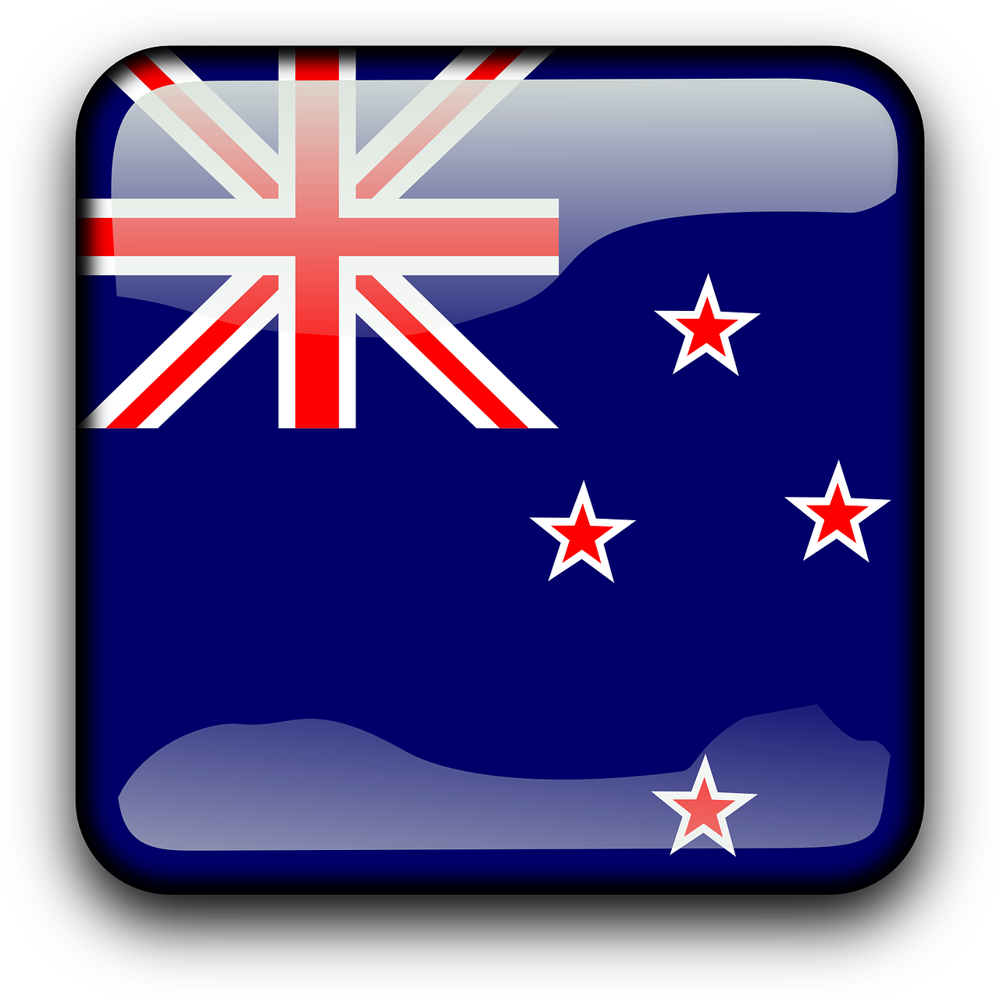
| Pionero y referencia para todos, Bruce McLaren abrió el camino de Nueva Zelanda en la F1 en la
temporada 1959 en un GP de Mónaco en el que logró sobrevivir a la escabechina general que acabó con solo
cinco pilotos en meta. Desde entonces disputaría 98 grandes premios más, logrando cuatro victorias.
Pero sería Denny Hulme el que llevaría la bandera neozelandesa a lo más alto al ganar el Mundial de F1 en 1967.
Entre los ocho hombres que antes de Hartley corrieron en F1 también destacó el nombre de Chris Amon, que si bien
en el Gran Circo nunca logró una victoria a pesar de sumar tres podios, ganó las 24 horas de Le Mans 1966 junto
a su compatriota McLaren en el primer triunfo de Ford.
|
|
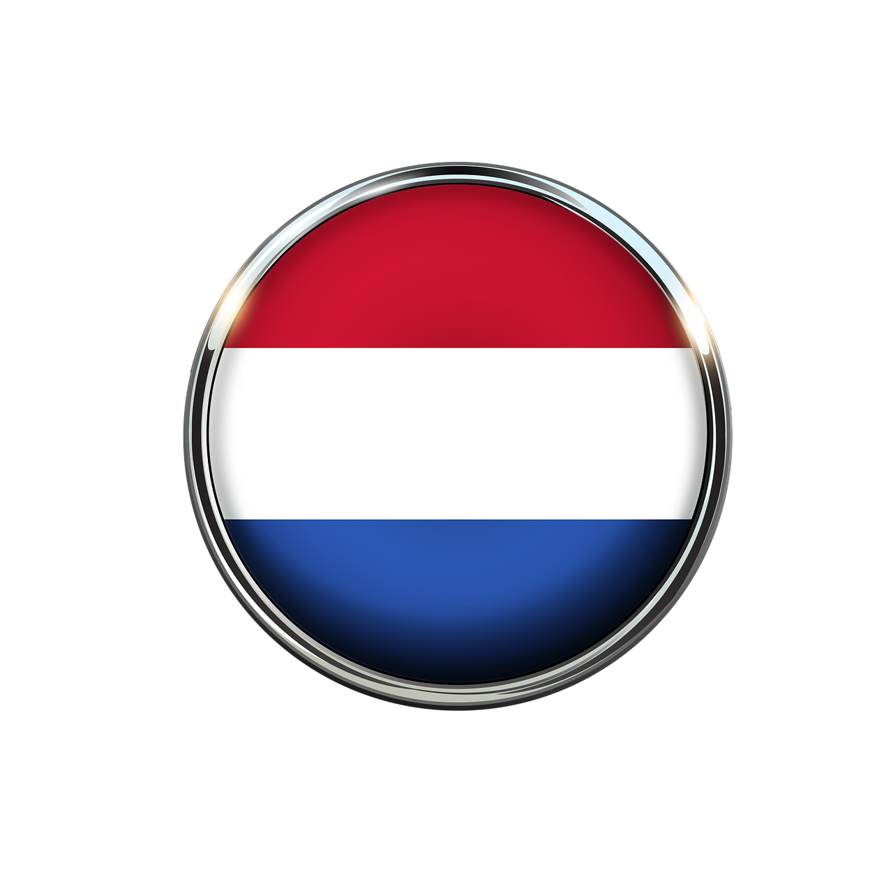
| La Fórmula 1 coronó a su primer Campeón del Mundo de Holanda después del controvertido Gran Premio
de Abu Dhabi de 2021. Max Verstappen y Red Bull ganó el Campeonato del Mundo de Pilotos y el holandés logró
su vigésima victoria en el Gran Premio desde que ingresó a la Fórmula 20 en 1. Si le gustan las apuestas,
definitivamente le recomendamos que apueste por Verstappen y continúe agregando algunas estadísticas interesantes
a su currículum de carreras. Además, también le recomendamos que obtenga su Resorts Casino código de bonificación
para disfrutar jugando mientras espera que comience la carrera.
Por supuesto, Max Verstappen es el piloto holandés más exitoso en la historia de la Fórmula 1,
pero algunos compatriotas fueron corredores en el deporte y le abrieron el camino. La lista de pilotos
holandeses en el deporte incluye al padre de Verstappen, Jos Verstappen, quien compitió en la Fórmula 1
de 1994 a 2003, con algunos años de descanso en el medio.
|
|
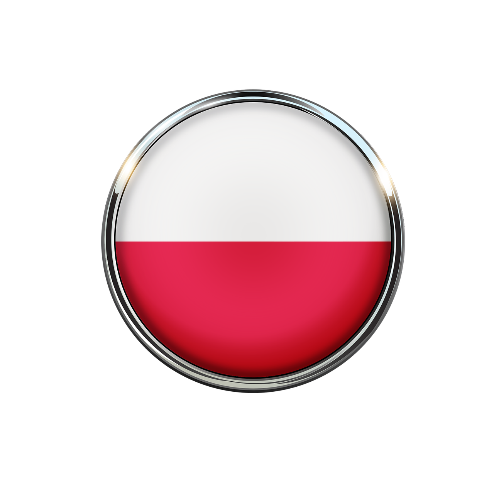
| Robert Józef Kubica (pronunciado 'rɔbɛrt ku'bitsa) (Cracovia, Polonia, 7 de diciembre de 1984),
más conocido como Robert Kubica, es un piloto polaco de automovilismo. Es el primer piloto de Fórmula 1
polaco, así como el primer polaco en ganar una carrera en esta competición. En el año 2011 y tras cuatro
temporadas completas y parte de otra en la F1 sufrió un accidente compitiendo en una prueba de rally que lo
apartó de los circuitos. Desde entonces, y hasta 2019 donde corrió para Williams, solo compitió en pruebas
de esta categoría. En 2013 debutó en el Campeonato de Europa de Rally y en el Campeonato Mundial de Rally, en
este último participando en la categoría WRC 2, donde logró el título.
|
|
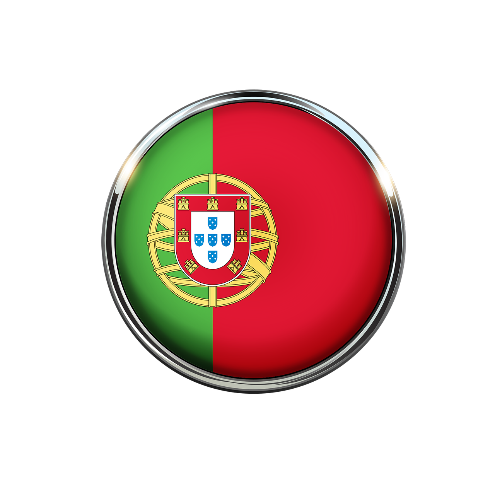
| Pedro Matos Chaves (Oporto, Portugal; 27 de febrero de 1965) es un expiloto de automovilismo portugués.
Chaves fue el segundo campeón portugués de Fórmula Ford, en 1986, comenzando una
carrera internacional en 1987 en el Campeonato Británico de Fórmula Ford. En 1990
ganó el Campeonato de Fórmula 3000 Británica con los colores de Madgwick Motorsport,
también compitiendo en algunas rondas de Fórmula 3000 Internacional.
|
|
| Sir Lewis Carl Davidson Hamilton23 (Stevenage, Hertfordshire, Inglaterra, Reino Unido;
7 de enero de 1985) es un piloto británico de automovilismo. En Fórmula 1 desde 2007 hasta
2012, fue piloto de la escudería McLaren, con la cual fue campeón en 2008 y subcampeón en 2007.
A partir de 2013, se convirtió en piloto de Mercedes, resultando campeón en 2014, 2015, 2017, 2018,
2019, 2020, igualando los 7 títulos de Michael Schumacher, y subcampeón en 2016 y 2021. Ha logrado
alzarse con más de 103 victorias en Grandes Premios a lo largo de su carrera en la Fórmula 1, siendo
quien tiene más victorias en la historia de la competición, superando en 2020 el récord de victorias de Schumacher.
|
|
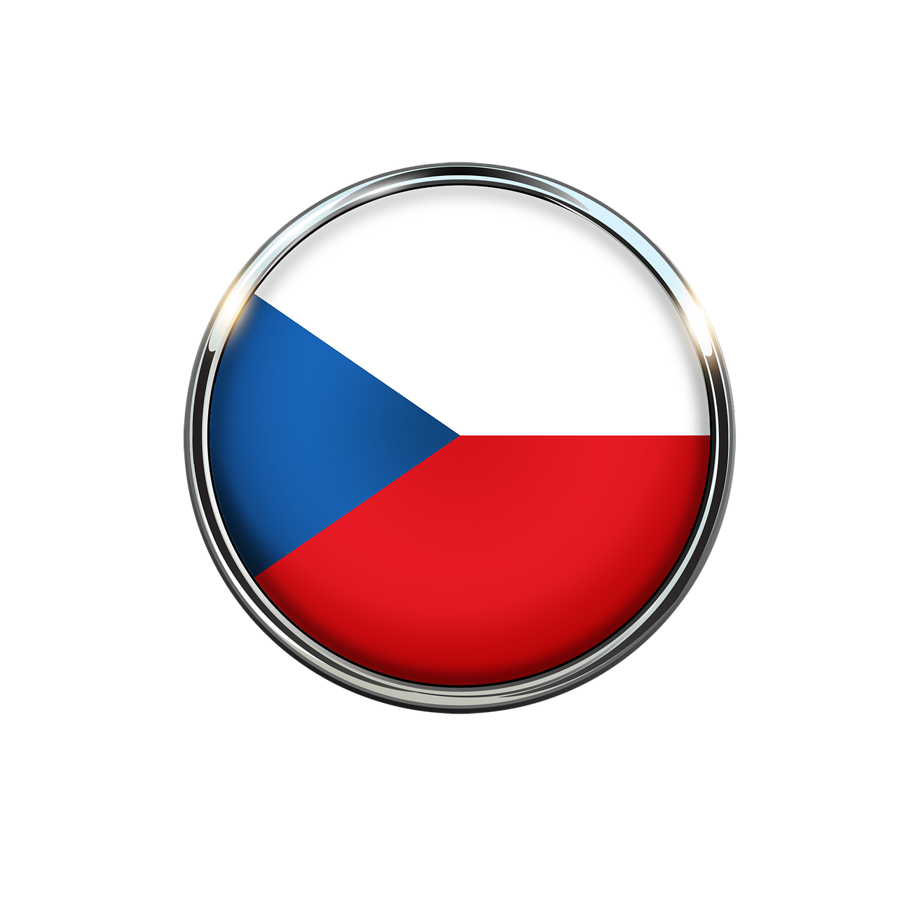
| Tomáš Enge (Liberec, República Checa; 11 de septiembre de 1976 en Liberec) es
un expiloto de automovilismo checo.1 Disputó los 3 Grandes Premios de la temporada
2001 de Fórmula 1 con Prost, reemplazando a Luciano Burti, accidentado en el Gran Premio
de Bélgica. También se hizo conocido al haber sido el primer piloto en tener un caso de dopaje
por consumo de marihuana en el automovilismo mundial perdiendo de este modo su campeonato de Fórmula 3000 en 2002.2
|
|
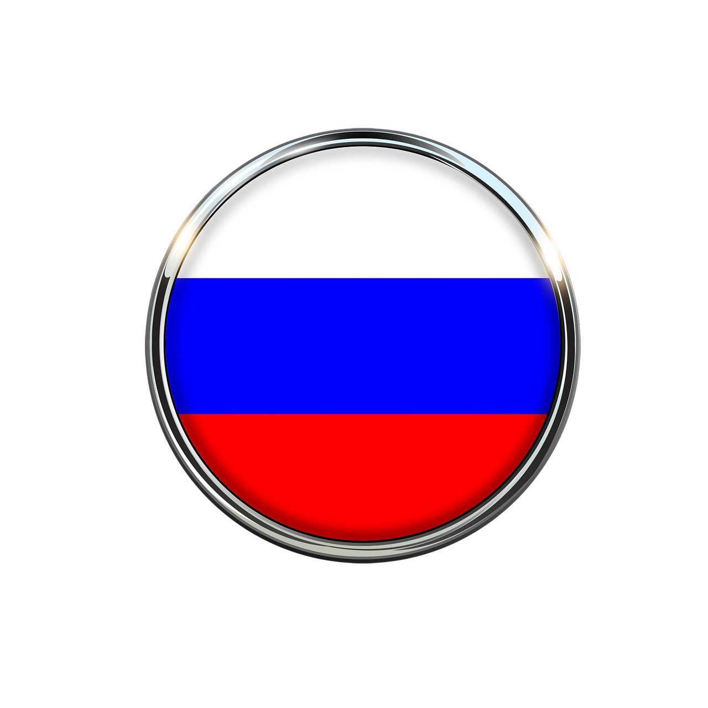
| Daniil Viacheslavovich Kvyat (en ruso: Даниил Вячеславович Квят; Ufá, Baskortostán, Rusia; 26 de abril de 1994)
es un piloto de automovilismo ruso. En 2012 fue campeón de la Fórmula Renault 2.0 con 7 victorias. En 2013
compitió en Fórmula 3 Europea como invitado y se proclamó campeón de la cuarta temporada de GP3 Series. Debutó
en Fórmula 1 en Scuderia Toro Rosso para la temporada 2014. En este campeonato, ha competido también con el equipo
Red Bull, y en total ha sumado tres podios. En 2019 volvió a competir con Toro Rosso hasta 2020, renombrado como
AlphaTauri. Actualmente es el piloto de reserva de Alpine.
|
|
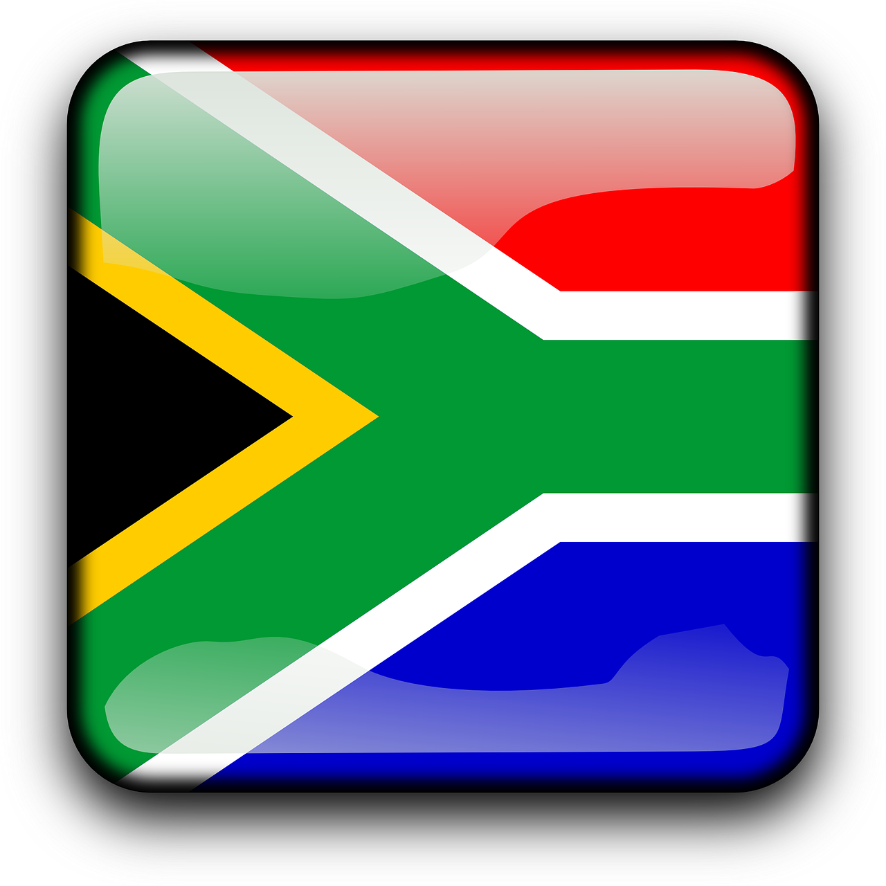
| Jody David Scheckter (East London, Sudáfrica; 29 de enero de 1950) es un expiloto
de automovilismo sudafricano. Disputó 112 carreras en Fórmula 1 entre las temporadas 1972 y
1980, destacándose como piloto de Ferrari, Wolf y Tyrrell. Resultó campeón en 1979, subcampeón en
1977, y tercero en 1974 y 1976. El piloto obtuvo 10 victorias y 33 podios en la categoría.1
Su hijo, Tomas Scheckter, también fue piloto de automovilismo, quien ha corrido en IndyCar Series y A1GP.
|
|
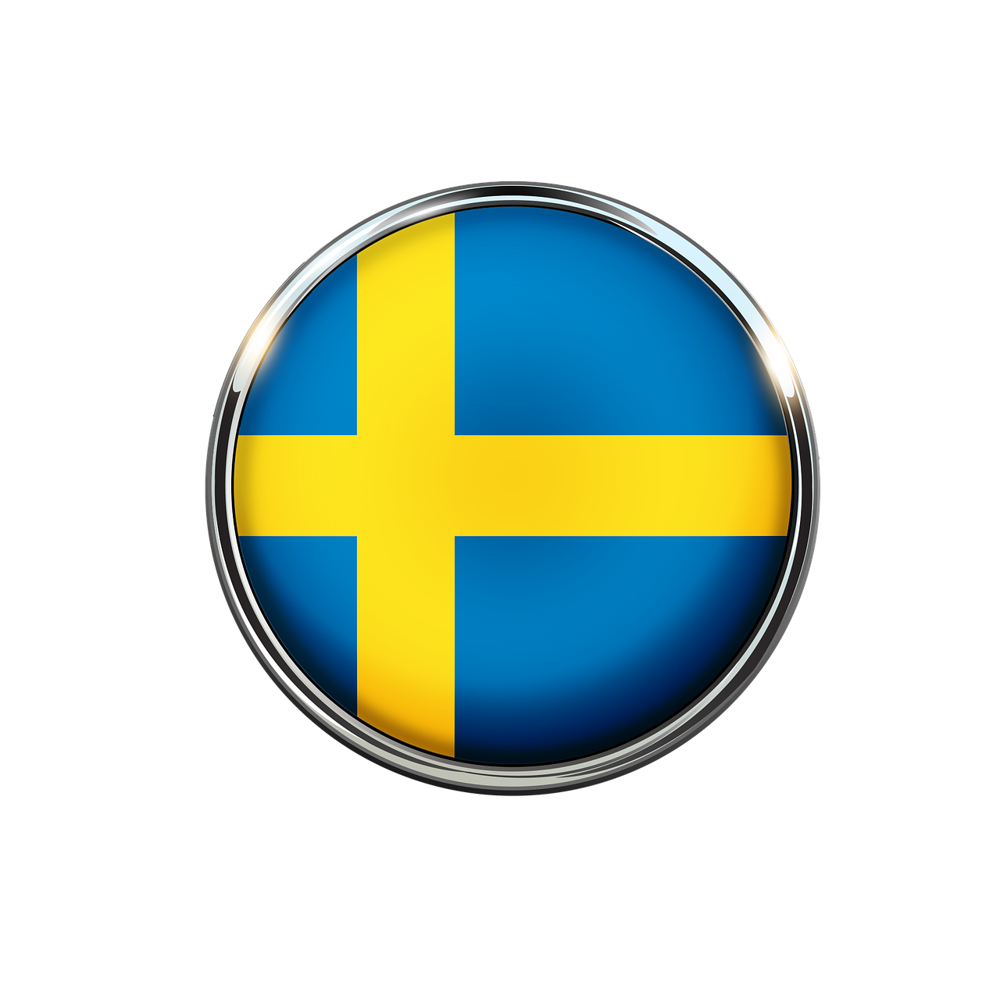
| Karl Edward Tommy Borgudd (Borgholm, Öland, 25 de noviembre de 1946), más conocido como
Slim Borgudd o Tommy Borgudd, es un expiloto de automovilismo sueco. Disputó 15 Grandes Premios
de Fórmula 1 entre 1981 y 1982, donde obtuvo 1 punto. También se dedicó al sector musical, donde
realizó trabajos con bandas como Hootenanny Singers o ABBA.3
|
|
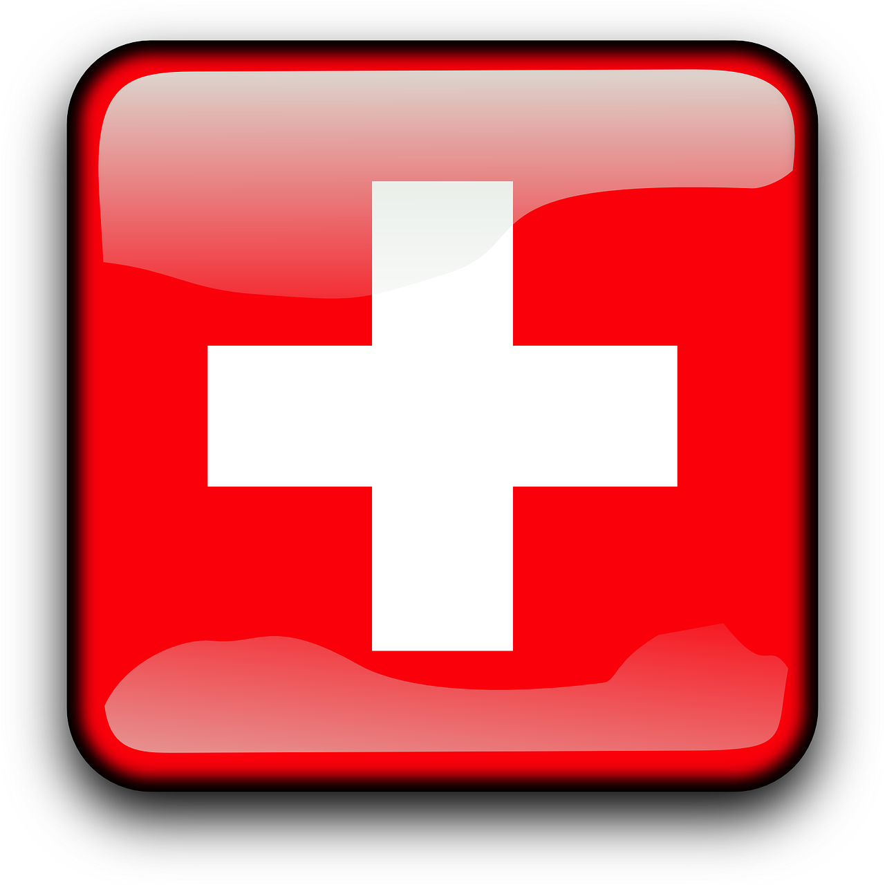
| Sébastien Olivier Buemi (Aigle, Suiza; 31 de octubre de 1988) es un piloto de automovilismo suizo.
Fue piloto en la Scuderia Toro Rosso de Fórmula 1 durante tres años (2009-2011), tras pasar por GP2 Series en 2007 y 2008.
Buemi es piloto de Toyota Gazoo Racing en el Campeonato Mundial de Resistencia de la FIA desde 2012,
donde ha obtenido dos títulos en 2014 y 2018-19, así como más de 15 victorias, incluyendo las 24 Horas
de Le Mans de 2018, 2019 y 2020. Por otra parte, compite en la Fórmula E desde 2014 con el equipo e.dams,
donde ha conseguido 13 victorias, el Campeonato del Mundo de 2015-16 y tres subcampeonatos en 2014-15, 2016-17 y 2018-19.
|
|
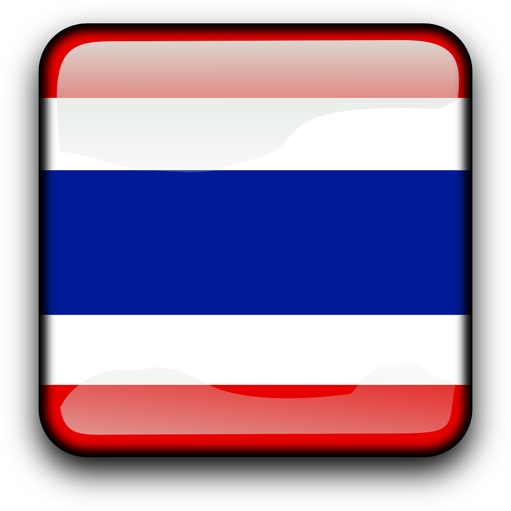
| Alexander Albon Ansusinha ( Inglaterra, 23 de marzo de 1996),
más conocido como Alex Albon, es un piloto de automovilismo tailandés nacido en el Reino Unido. En 2021
participó en el DTM con AF Corse tras dos años en la Fórmula 1 como piloto de Toro Rosso y Red Bull Racing.
En 2022 regresará a la categoría con la escudería Williams Racing.
|
|
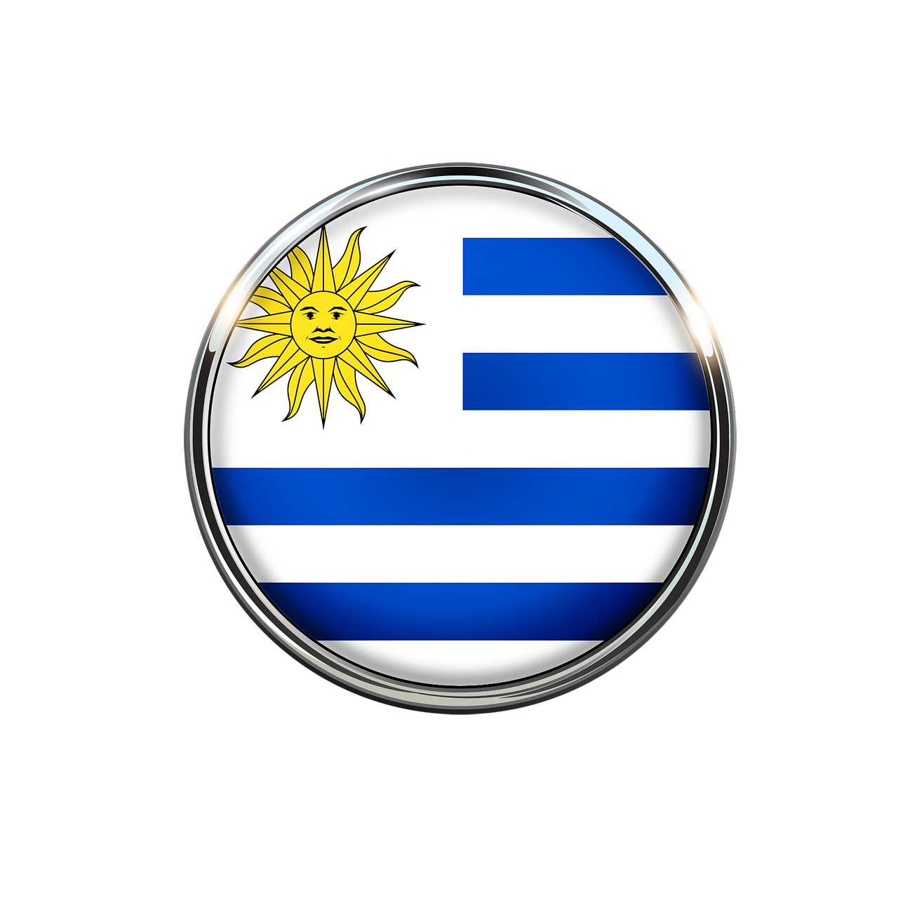
| Eitel Danilo Cantoni (Montevideo, Uruguay, 4 de octubre de 1906-ibídem, 6 de junio de 1997)
fue un piloto de automovilismo uruguayo. Compitió en la temporada 1952 de Fórmula 1 en tres carreras,
terminando una. Posteriormente compitió en carreras de resistencia.1
En el Gran Premio de Italia de 1952, además de obtener su mejor resultado (11°), obtuvo su mejor
posición en una parrilla de salida (vigesimotercera plaza). Compitió en Fórmula 1, 79 vueltas, unos 564 kilómetros.2
Antes de competir en la Fórmula 1 corrió en los Grand Prix, incluyendo la única carrera que se realizó
en Chile en 1950 donde obtuvo el tercer lugar, siendo superado por los argentinos Juan Manuel Fangio y
Froilán González, superando al popular corredor local Bartolomé Ortiz.
|
|
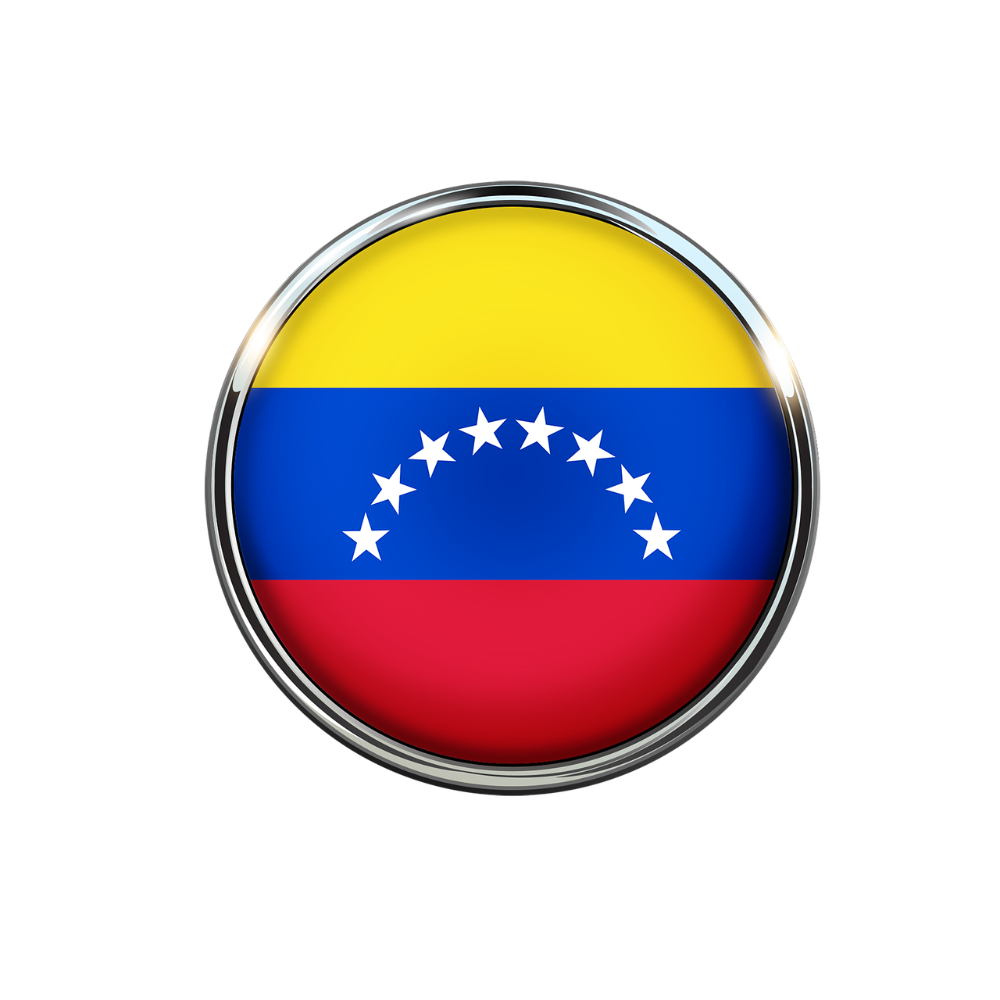
| Pastor Rafael Maldonado Motta OL (Maracay, Venezuela; 9 de marzo de 1985),
es un piloto venezolano de automovilismo. Se coronó campeón de la temporada 2010
de GP2 Series en Monza, a falta de dos fechas para finalizar la temporada, después de 4 años en esta categoría.1
Desde 2011 hasta 2015 corrió en Fórmula 1. Se convirtió en el primer venezolano en ganar un Gran Premio,
tras ganar el GP de España de 2012, con Williams.2 Actualmente compite en carreras de resistencia.3
|